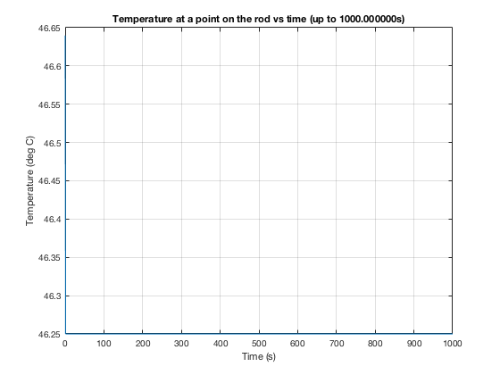
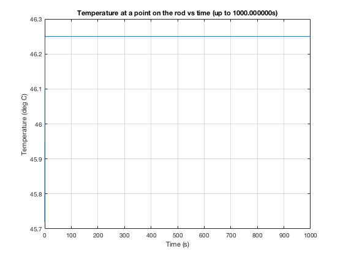
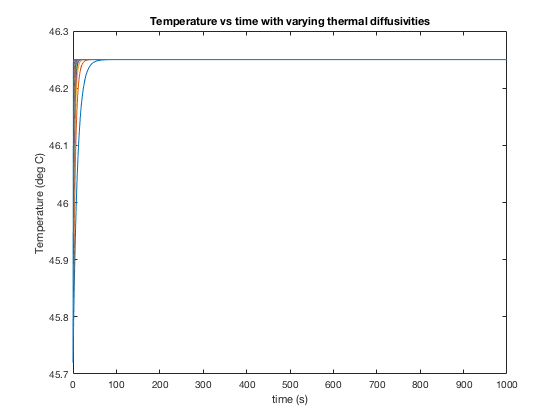

Contents
clc
clear all
close all
Question 5
N = 10;
H = 7.92;
alpha = 48.2;
L = 5;
x = 4.875;
t = 0:0.1:1;
T0 = 7.64;
bn = -4*H*((-1).^N)./((2*N-1)*pi);
lam = ((2*N - 1)*pi)/(2*L);
u = calcTemp(N, bn, lam, x, alpha, t, T0, H);
t = 0:1:1000;
N = 1;
u = calcTemp(N, bn, lam, x, alpha, t, T0, H);


Question 6
lam = pi/(2*L);
u = calcTemp(N, bn, lam, x, alpha, t, T0, H);
alpha = 1:50;
figure(4)
for i = 1:length(alpha)
sum = 0;
for j = 1:N
sum = sum + bn*sin(lam.*x)*exp(-lam^2*alpha(i).*t);
end
u = T0 + H*x + sum;
plot(t, u);
hold on;
end
xlabel('time (s)');
ylabel('Temperature (deg C)');
title('Temperature vs time with varying thermal diffusivities');
 
functions called
function u = calcTemp(N, bn, lam, x, alpha, t, T0, H, hold)
sum = 0;
for i = 1:N
sum = sum + bn*sin(lam.*x)*exp(-lam^2*alpha.*t);
end
u = T0 + H*x + sum;
figure
plot(t, u);
grid on
xlabel("Time (s)");
ylabel("Temperature (deg C)");
str = sprintf("Temperature at a point on the rod vs time (up to %fs)",max(t));
title(str);
end